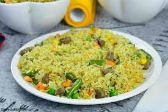

FRIED RICE

Description
Fried Rice is a colorful and flavorful dish made with cooked rice stir-fried with mixed vegetables such as carrots, peas, sweet corn, and green beans. It is well-seasoned with spices and curry powder, giving it a rich golden-yellow color. Small pieces of liver or meat are also mixed in, adding protein and extra flavor. The dish is neatly served, creating an appetizing and vibrant presentation typical of festive or party meals in West Africa.
Ingredients
- 2 cups of long-grain parboiled rice
- 1 cup mixed vegetables (carrots, peas, sweet corn, and green beans)
- 1 cup diced liver or cooked chicken (optional)
- 1/2 cup vegetable oil or butter
- 1 small onion, finely chopped
- 2–3 cloves garlic, minced (optional)
- 1 teaspoon curry powder
- 1 teaspoon thyme
- 2 seasoning cubes (e.g., Maggi or Knorr)
- Salt to taste
- 1/2 teaspoon ground white or black pepper
- 2 cups chicken stock or water
- 1/2 cup chopped green bell pepper (optional, for extra color)
Preparation Steps
- Parboil the rice: Wash the rice and parboil it for about 5–7 minutes. Rinse with cold water and drain to remove excess starch. Set aside.
- Prepare the liver or chicken: If using liver or chicken, season it with salt, seasoning cubes, and curry powder. Boil until tender, then dice into small cubes and set aside.
- Make the stock: Use the water from boiling your chicken or liver as stock. This adds flavor to your fried rice.
- Cook the rice: In a large pot, add your chicken stock, curry powder, thyme, salt, and seasoning cubes. Add the parboiled rice and cook on low heat until the rice is tender and the liquid is absorbed. Don’t overcook.
- Stir-fry the vegetables: In a large frying pan or wok, heat the vegetable oil or butter. Add onions and garlic, sauté until fragrant. Add the diced liver or chicken, then add the mixed vegetables and bell pepper. Stir-fry for about 3–5 minutes.
- Combine rice and veggies: Add portions of the cooked rice into the pan with the vegetables. Stir well so everything mixes evenly and the rice absorbs the flavor. Repeat until all rice is fried and well combined.
- Final touch: Taste for seasoning and adjust if necessary. Continue to stir-fry for a few minutes to give it that smoky “party fried rice” flavor.
- Serve and enjoy! Serve hot with grilled chicken, fried plantains, or salad.
HOME PAGE